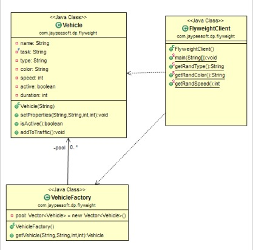

FlyWeight(享元)
使用场景
- 需要创建大量对象时候，提高性能。
- 当大多数对象属性可以在外部并且可以被共享时候。
目的
使用共享，支持大量的细粒度对象，达到极少的对象，通过共享来实现创建大量对象的效果。--------------------------------------------------
FlyWeight VS Prototype:
* 首先二者分属不同的类型，一个是创建模式，一个是结构模式。
* Prototype
创建对象是通过clone，主要是为了方便创建耗时对象，每次都创建一个新的对象。
* FlyWeight 目的是为了复用对象池的对象，通过共享该对象，每次池子有就直接复用，没有在创建新的对象。
* Prototype 对象是改变的，通过空间换取时间,这样有点牵强，主要是快读创建，节省时间。
* FlyWeight 对象是不变的，通过时间换取空间，这样说有点牵强，主要是为了节省内存。
结构体

代码实现
游戏里面，大量交通工具实例，不需要每次都创建，可以通过享元模式实现。
1. 创建车辆类，设置好内在和外在的特性
package me.chunsheng.gof.Structural.flyweigth;
import java.util.Timer;
import java.util.TimerTask;
/**
* @author wei_spring
* @projectName Doraemon
* @description: 创建类-> Vehicle
* @date 2020-05-3009:01
*/
public class Vehicle {
private String name;
private final String task;
private String type;
private String color;
private int speed;
private boolean active;
private int duration;
public Vehicle(String name) {
task = "Obstruct the racers";
this.name = name;
}
public void setProperties(String type, String color, int speed, int duration) {
this.type = type;
this.color = color;
this.speed = speed;
this.duration = duration;
}
public boolean isActive() {
return active;
}
public void addToTraffic() {
System.out.println("->" + name + "-" + type + "-" + duration + " seconds");
new Timer().schedule(new TimerTask() {
@Override
public void run() {
active = false;
System.out.println(name + "->out");
}
}, duration * 1000);
active = true;
}
}
2. 创建车辆工厂类，并初始化一批车辆，添加到车辆池中，当请求车辆时，从池中检索并设置所需要属性.
package me.chunsheng.gof.Structural.flyweigth;
import java.util.Vector;
/**
* @author wei_spring
* @projectName Doraemon
* @description: 创建类-> VehicleFactory
* @date 2020-05-3009:20
*/
public class VehicleFactory {
private Vector pool = new Vector<>();
public VehicleFactory() {
for (int i = 0; i < 5; i++) {
pool.add(new Vehicle("V" + (i + 1)));
}
}
public Vehicle getVehicle(String type, String color, int speed, int duration) {
for (Vehicle v : pool) {
if (!v.isActive()) {
v.setProperties(type, color, speed, duration);
return v;
}
}
return null;
}
}
3. client类
package me.chunsheng.gof.Structural.flyweigth;
import java.util.Random;
/**
* @author wei_spring
* @projectName Doraemon
* @description: 创建类-> FlyWeightClient
* @date 2020-05-3109:25
*/
public class FlyWeightClient {
static Random r = new Random();
private static String[] types = {"bus", "truck", "car"};
private static String[] colors = {"red", "green", "blue"};
private static int[] speeds = {50, 30, 80};
public static void main(String[] args) {
VehicleFactory factory = new VehicleFactory();
for (int i = 0; i < 20; i++) {
Vehicle v = factory.getVehicle(types[r.nextInt(types.length)], colors[r.nextInt(colors.length)], speeds[r.nextInt(speeds.length)], (r.nextInt(5) + 1));
if (v != null) {
System.out.println("vehicle" + (i + 1));
v.addToTraffic();
} else {
i--;
try {
Thread.sleep(1000);
} catch (InterruptedException e) {
e.printStackTrace();
}
}
}
}
}
Output
/Library/Java/JavaVirtualMachines/jdk1.8.0_91.jdk/Contents/Home/bin/java "-javaagent:/Applications/IntelliJ IDEA CE.app/Contents/lib/idea_rt.jar=62681:/Applications/IntelliJ IDEA CE.app/Contents/bin" -Dfile.encoding=UTF-8 -classpath /Library/Java/JavaVirtualMachines/jdk1.8.0_91.jdk/Contents/Home/jre/lib/charsets.jar:/Library/Java/JavaVirtualMachines/jdk1.8.0_91.jdk/Contents/Home/jre/lib/deploy.jar:/Library/Java/JavaVirtualMachines/jdk1.8.0_91.jdk/Contents/Home/jre/lib/ext/cldrdata.jar:/Library/Java/JavaVirtualMachines/jdk1.8.0_91.jdk/Contents/Home/jre/lib/ext/dnsns.jar:/Library/Java/JavaVirtualMachines/jdk1.8.0_91.jdk/Contents/Home/jre/lib/ext/jaccess.jar:/Library/Java/JavaVirtualMachines/jdk1.8.0_91.jdk/Contents/Home/jre/lib/ext/jfxrt.jar:/Library/Java/JavaVirtualMachines/jdk1.8.0_91.jdk/Contents/Home/jre/lib/ext/localedata.jar:/Library/Java/JavaVirtualMachines/jdk1.8.0_91.jdk/Contents/Home/jre/lib/ext/nashorn.jar:/Library/Java/JavaVirtualMachines/jdk1.8.0_91.jdk/Contents/Home/jre/lib/ext/sunec.jar:/Library/Java/JavaVirtualMachines/jdk1.8.0_91.jdk/Contents/Home/jre/lib/ext/sunjce_provider.jar:/Library/Java/JavaVirtualMachines/jdk1.8.0_91.jdk/Contents/Home/jre/lib/ext/sunpkcs11.jar:/Library/Java/JavaVirtualMachines/jdk1.8.0_91.jdk/Contents/Home/jre/lib/ext/zipfs.jar:/Library/Java/JavaVirtualMachines/jdk1.8.0_91.jdk/Contents/Home/jre/lib/javaws.jar:/Library/Java/JavaVirtualMachines/jdk1.8.0_91.jdk/Contents/Home/jre/lib/jce.jar:/Library/Java/JavaVirtualMachines/jdk1.8.0_91.jdk/Contents/Home/jre/lib/jfr.jar:/Library/Java/JavaVirtualMachines/jdk1.8.0_91.jdk/Contents/Home/jre/lib/jfxswt.jar:/Library/Java/JavaVirtualMachines/jdk1.8.0_91.jdk/Contents/Home/jre/lib/jsse.jar:/Library/Java/JavaVirtualMachines/jdk1.8.0_91.jdk/Contents/Home/jre/lib/management-agent.jar:/Library/Java/JavaVirtualMachines/jdk1.8.0_91.jdk/Contents/Home/jre/lib/plugin.jar:/Library/Java/JavaVirtualMachines/jdk1.8.0_91.jdk/Contents/Home/jre/lib/resources.jar:/Library/Java/JavaVirtualMachines/jdk1.8.0_91.jdk/Contents/Home/jre/lib/rt.jar:/Library/Java/JavaVirtualMachines/jdk1.8.0_91.jdk/Contents/Home/lib/ant-javafx.jar:/Library/Java/JavaVirtualMachines/jdk1.8.0_91.jdk/Contents/Home/lib/dt.jar:/Library/Java/JavaVirtualMachines/jdk1.8.0_91.jdk/Contents/Home/lib/javafx-mx.jar:/Library/Java/JavaVirtualMachines/jdk1.8.0_91.jdk/Contents/Home/lib/jconsole.jar:/Library/Java/JavaVirtualMachines/jdk1.8.0_91.jdk/Contents/Home/lib/packager.jar:/Library/Java/JavaVirtualMachines/jdk1.8.0_91.jdk/Contents/Home/lib/sa-jdi.jar:/Library/Java/JavaVirtualMachines/jdk1.8.0_91.jdk/Contents/Home/lib/tools.jar:/Volumes/CoderFile/学习天地/Doraemon/out/production/Doraemon me.chunsheng.gof.Structural.flyweigth.FlyWeightClient
vehicle1
->V1-car-4 seconds
vehicle2
->V2-truck-4 seconds
vehicle3
->V3-bus-2 seconds
vehicle4
->V4-truck-3 seconds
vehicle5
->V5-bus-5 seconds
V3->out
vehicle6
->V3-truck-4 seconds
V4->out
vehicle7
->V4-truck-5 seconds
V2->out
V1->out
vehicle8
->V1-car-1 seconds
vehicle9
->V2-truck-4 seconds
V5->out
vehicle10
->V1-car-2 seconds
V1->out
vehicle11
->V5-car-2 seconds
V3->out
vehicle12
->V3-bus-5 seconds
V5->out
V1->out
vehicle13
->V1-car-5 seconds
vehicle14
->V5-truck-1 seconds
V4->out
V2->out
vehicle15
->V2-car-4 seconds
V5->out
vehicle16
->V4-car-3 seconds
vehicle17
->V5-truck-5 seconds
V3->out
V4->out
vehicle18
->V3-truck-1 seconds
vehicle19
->V4-truck-3 seconds
V2->out
V1->out
V3->out
vehicle20
->V1-truck-4 seconds
V5->out
V4->out
V1->out
Process finished with exit code 0
优点
- 实例总说可以减少
- 对象共享，减少了整体内存的使用
缺点
- 会引入与转移，查找和计算外部状态的运行时的成本，特别是属性是固有的情况
Java SDK 例子
- java.lang.Integer.valueOf(java.lang.String, int)(其他基本类型包装类同理)